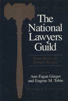

A documentary history traces the growth of one of the few progressive organizations created-in the 1930s to survive the Cold War and McCarthyism
A documentary history traces the growth of one of the few progressive organizations created-in the 1930s to survive the Cold War and McCarthyism


 A documentary history traces the growth of one of the few progressive organizations created-in the 1930s to survive the Cold War and McCarthyism
A documentary history traces the growth of one of the few progressive organizations created-in the 1930s to survive the Cold War and McCarthyism

|  |
National Lawyers GuildFrom Roosevelt through Reaganedited by Ann Fagan Ginger and Eugene M. Tobin, foreword by Clark Ramseycloth EAN: 978-0-87722-488-4 (ISBN: 0-87722-488-9) |
The National Lawyers Guild (NLG) was a product of both the Great Depression and the progressive liberalism inspired by the New Deal, Popular Front, and insurgent activities spearheaded by Marxists and Communists. This documentary history traces the growth of one of the very few progressive organizations created-in the 1930s to survive the Cold War and McCarthyism. In addition to articles, papers, policy statements, and speeches by close to one hundred founders, judicial leaders, and participants of the NLG, special emphasis has been accorded the federal government�s response to the Guild, particularly through reports and testimony gathered by the FBI and House Un-American Activities Committee.
The constitution of the NLG states that its members shall serve the people "to the end that human rights shall be regarded as more sacred than property rights." Throughout its remarkable history, Guild lawyers have confronted such pressing domestic issues as national health insurance, social security, labor�s right to organize and bargain collectively, anti-lynching legislation, full employment, reproductive freedom, and always the protection and advocacy of civil liberties and civil rights. Not limited to domestic affairs, and in support of peace law, the Guild played an important part in the formation of the United Nations, the Nuremberg trials, the Marshall Plan, and the policy of containment in Korea, Vietnam, and Central America.
Ann Fagan Ginger is President of the Meiklejohn Civil Liberties Institute and Director of its Peace Law and Education Project.
Eugene M. Tobin is Publius Virgilius Rogers Associate Professor of American History and Chair of the Department of History at Hamilton College.
© 2015 Temple University. All Rights Reserved. This page: http://www.temple.edu/tempress/titles/499_reg.html.